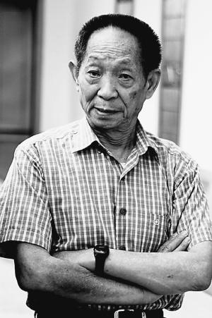
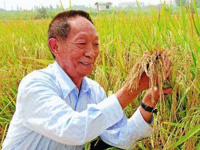
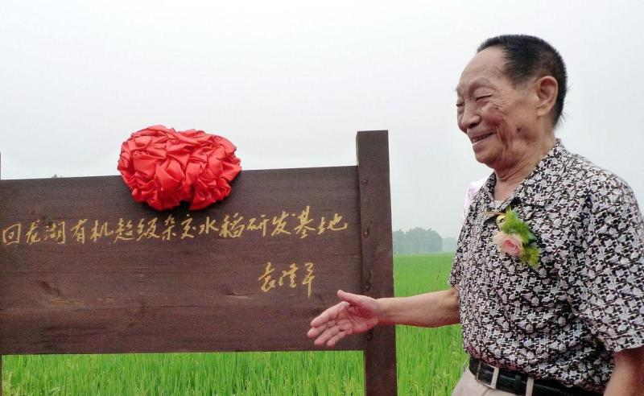

相关图片
- 
- 
- 
袁隆平是曾任政协十二届全国委员会常务委员，湖南省政协副主席，湖南省科协副主席。西南大学农学与生物科技学院名誉院长、湖南农业大学教授、中国农业大学客座教授、怀化职业技术学院名誉院长、湖南生物机电职业技术学院名誉院长、联合国粮农组织首席顾问、世界华人健康饮食协会荣誉主席，黑龙江延寿县经济发展顾问。
1971.01—1984.06湖南省农业科学院水稻所研究员，省杂交水稻研究协作组成员。
1979年任农业部科学技术委员会委员、中国作物学会副理事长、中国遗传学会理事、湖南省生物学会理事国务院授予袁隆平中国先进科技工作者与中国劳动模范的称号、湖南省遗传育种学会副理事长、湖南省农学会理事。
1982年8月26日，被聘为农牧渔业部技术顾问、中国杂交稻专家顾问组副组长。
1984年6月15日，湖南杂交水稻研究中心成立，袁隆平任中心主任。
1985年，被聘为湖南省安江农校名誉校长、西南农业大学兼职教授。
1988.01—1995.05 湖南省政协副主席，湖南杂交水稻研究中心主任，湖南省农业科学院名誉院长；
1991年11月2日，任湖南省农业科学院名誉院长。同年受聘联合国粮农组织国际首席顾问。
1995.05—2016.01 湖南省政协副主席，国家杂交水稻工程技术研究中心主任(1995年当选为中国工程院院士)。
2003年7月17日，海南省人民政府在三亚市举行仪式，聘请袁隆平院士为海南省政府高级科技顾问。
2005年，被贵州省人民政府聘为贵州省农业科学院顾问。
2008年5月，担任湖南生物机电职业技术学院名誉院长。
2012年6月，袁隆平正式受聘为“陈光标绿色食品产业高级顾问”。
2013年1月，当选湖南省政协副主席，3月选政协十二届中国委员会常务委员。
2016年1月，袁隆平辞免湖南省政协副主席职务。
2018年9月13日，当选为中国发明协会“会士”。